Регламент Евробот
This document is generated by eurobot/tools/import_rules.py from the official rules PDFs. Do not edit it by hand: the next import overwrites every statement.
Each node holds one numbered clause, under the UID RULE-<source>-<clause number>. A clause that disappears from a revised PDF keeps its node and gets STATUS: Removed, so that every requirement tracing to it keeps resolving.
Source documents:
- Евробот, правила PRO, версия 1.2 (_assets/rules/source/Eurobot_PRO_Rules_1.2_RU.pdf)
- Евробот, игровые правила 2026 (_assets/rules/source/Eurobot_Game_Rules_2026_RU.pdf)
1. Евробот, правила PRO, версия 1.2
1.1. A. ПРИМЕЧАНИЕ
Просим обратить внимание, что версия правил может меняться и уточняться в течение года, просим вас проверять, что версия правил выбранная для ознакомления является актуальной.
Ответы на вопросы от судей, а также решения, принятые в ходе проведения соревнования могут применятся в рамках судейства матчей и допуска роботов
1.2. B. ИДЕЯ СОРЕВНОВАНИЯ
Соревнования Евробот – это мероприятия, в которых могут принять участие молодые любители робототехники, объединившись в команды. Участники команд – школьники и студенты – молодые исследователи, которые участвуют в соревнованиях в рамках учебного проекта, как группа друзей или независимый клуб. Чемпионаты преследуют одну и ту же цель: дать возможность молодым людям активно обучаться и на практике применять полученные знания и умения в дружеском соревновании.
Правила соревнований основаны на одной идее. Организаторы предоставляют платформу для проведения. Эта платформа подразумевает создание автономных и управляемых роботов в зависимости от лиги.
Организаторы соревнований автономных роботов могут легко проводить соревнования управляемых роботов и наоборот.
1.3. C. СТРУКТУРА ПРАВИЛ
Соревнования имеют 2 набора правил, представленные в виде 2-х документов:
● Общие правила, в которых указаны ограничения и допуске, касательно соревнования в целом; ● Ежегодные правила, которые описывают тематику и задания соревнования в текущем году. ● Правила могут различаться для разных лиг.
1.4. D. ОГРАНИЧЕНИЯ УЧАСТНИКОВ
Приведенные ниже правила определяют общий порядок проведения соревнований, игровой процесс и ход матчей. Для участия в соревнованиях требуется соблюдение указанных ниже условий. Кроме того, организаторы Евробот могут добавить дополнительные требования к регистрации в отдельном документе.
Команда – это группа людей (не менее 2-х), создавшая робота (и, возможно, дополнительные системы) для соревнований. Отдельный человек может быть участником лишь одной команды, даже если обе команды принадлежат к одной организации, при этом, обмен опытом всячески приветствуется.
В лиге PRO руководителем может быть один из участников команды.
Команды должны принять участие в собственном научно-техническом проекте, который заключается в конструировании робота. Они могут использовать коммерческие компоненты при условии их интеграции в свой собственный проект.
В этом случае для роботов могут использоваться готовые шасси или базы роботов, если они были явно модифицированы участником в соответствии с правилами Eurobot и интегрированы в его собственный научно-технический проект.
Возрастное ограничение для участия в финале Евробот PRO отсутствует.
Одна организация может зарегистрировать несколько команд.
Соревнования по робототехнике - это общественные и семейные мероприятия. Поэтому мы просим команды соблюдать правила приличия и безопасности (электропитание, уровень шума, манеры поведения и т.д.). Эти правила распространяются как на самих участников, так и на их помощников и оборудование.
1.5. E. ПРЕДСТАВЛЕНИЕ ПРОЕКТА
Соревнования Евробот призывают учиться играя. Одной из основных целей организаторов является помощь проектам команд в течение года для успешного выступления на соревнованиях. С этой целью мы просим вас, провести предварительные работы и оформить техническое описание проекта и технический плакат.
Мы ожидаем увидеть привлекательных, инновационных роботов, которые соответствуют техническим ограничениям и правилам этого издания. Будучи творческим и оригинальным, вы повысите ценность своих усилий, а также производительность вашего робота (-ов) во время матчей. Сделав эту презентацию, вы увеличите коммуникационную ценность своего проекта и визуальную привлекательность ваших роботов, как для публики, приходящей на событие, так и для вашего собственного удовлетворения. Создав что-то эстетическое и функциональное, укрепит вашу рабочую мотивацию на время соревнований и в дальнейшем творчестве.
ТЕХНИЧЕСКИЙ ПЛАКАТ
Каждая команда должна предоставить технический постер своего робота. На этом плакате должна быть представлена информация, относящаяся к конструкции робота (чертежи, технические ссылки, технические характеристики и т.д.). Он должен быть размером не менее А1 (594х841 мм) и в идеале должен быть напечатан. Это направлено на поощрение обмена информацией и коммуникации между командами.
Следует предпринять особые усилия, чтобы сделать содержание плаката доступным для широкой публики. В идеале плакат должен содержать картинки и диаграммы, объясняющие концепцию
На плакате должны быть указаны:
- Имя команды.
- Имена участников.
- Страна команды.
- Флаг страны команды.
Этот плакат будет вывешен на стенде каждой команды во время соревнований. Для международного финала требуется версия на английском языке. Выбранное разрешение должно гарантировать разборчивость всех текстов. PDF- файл не должен превышать 25 МБ. PDF- версия плаката может быть отправлена в НОК.
Мы рекомендуем командам рассказывать о своих проектах в течение года, к примеру, публикуя информацию в Интернете, на форумах Eurobot, блогах и прочими способами.
Наличие технического плаката даёт дополнительные очки при отборочном этапе в рамках Российского финала.
1.6. F. РОБОТЫ
This heading has no text of its own. Its content is in the clauses below it.
Каждая команда должна зарегистрировать основного робота и другие дополнительные и необязательные устройства. Робот и устройства имеют собственные ограничения по размерам, однако важно сделать их различимыми между собой и и устройствами команды соперника для зрителей.
Все дополнительные устройства могут участвовать исключительно с тем роботом, с которым они были разработаны и допущены. Они не могут быть допущены до участия с другим роботом.
Основной робот и дополнительные устройства должны состоять из деталей, соединенных между собой. Потери частей устройства или деталей на игровом поле не допускаются (если они не являются игровым элементом).
Намеренно вызывать тряску или вибрацию стола, фиксация себя к игровому полю или любое другое недопустимое действие приведёт к провалу гомологизации.
Каждая команда должна создать свой набор из робота и компонентов:
- автономный робот
- один (или более) автономный МАРС (необязательно)
- дистанционное устройство слежения и вычисления (необязательно)
- мобильные маяки (необязательно)
- статические маяки (необязательно)
Команды могут создать несколько роботов, но каждый из них должен быть допущен отдельно. И только один робот может быть взят при подготовке и расположен на игровом поле.
Проявите фантазию! Например, в качестве инновации, а также для того, чтобы предложить публике настоящее шоу, ваш робот может использовать звуки, выражать эмоции и т.д.!
Команды должны принять участие в собственном научно-техническом проекте, который заключается в конструировании робота. Они могут использовать коммерческие компоненты при условии их интеграции в свой собственный проект.
В этом случае для роботов могут использоваться готовые шасси или базы роботов, если они были явно модифицированы участником в соответствии с правилами Eurobot и интегрированы в его собственный научно-технический проект.
Периметр робота - это периметр выпуклой оболочки его вертикальной проекции на поверхность. Измеряется он, как показано на рисунках ниже:
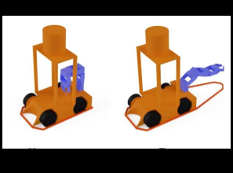
Периметр робота на момент старта матча не должен превышать 1200 мм. Периметр полностью развернутого робота не должен превышать 1400 мм во время матча. В ходе игры разрешается менять форму выпуклого корпуса, если его периметр всегда соответствует ограничению на максимальный периметр.
В любой момент времени во время матча высота каждого робота и манипулируемого объекта не должна превышать 350 мм. Однако допускается, что кнопка аварийной остановки может превышать это ограничение по высоте и достигать 375 мм.
Эта высота не включает опорную мачту маяка, любые датчики и электронные схемы, встроенные под опорную мачту маяка.
This heading has no text of its own. Its content is in the clauses below it.
В случае участия, оборудование должно соответствовать стандартам безопасности. Кроме вышеуказанного, должны соблюдаться правила техники безопасности, не подвергать опасности участников, организаторов и зрителей. Не должно быть выступов или острых краёв в конструкции, которые могут представлять угрозу.
Использование жидкости, кислоты, горючего, пиротехники, радиоактивных веществ, живых существ или зомби запрещено
Любая система, которая по мнению судей может представлять опасность не будет допущена до участия и должна быть заменена (на безопасную).
Список допустимых источников энергии в роботе и дополнительных системах: электрические химические батареи, коммерческие батареи, пружины или эластичные материалы, сжатый воздух, гравитационная энергия. Любые другие источники энергии запрещены.
Если у вас есть сомнения в отношении необычного источника энергии, лучше заранее посоветуйтесь с судейским комитетом, предоставляя соответствующую техническую документацию..
Все роботы должны соответствовать стандартам "низкого напряжения". Это означает, что напряжение на борту не должно превышать 48 В.
Разница потенциалов более чем 48 В может присутствовать внутри закрытых коммерческих устройствах(прим. лазеры, LCD подсветка, и т.д.) и только в случае, если эти устройства соответствуют стандартам и не были модифицированы.
Аккумуляторы:
Если команда решила использовать аккумуляторы, мы напоминаем, что допускаются только не модифицированные аккумуляторы.
Команды должны быть готовы провести три матча подряд. Это также включает время на подготовку, в течение которого робот будет включен и ожидает начала матча.
По вышеуказанной причине, мы настоятельно рекомендуем приносить с собой несколько аккумуляторов, а также продумать способ быстрой их смены. Напоминаем командам, что необходимо также иметь запасные аккумуляторы, которые полностью заряжены, на протяжении всего турнира.
Особое внимание к аккумуляторам на основе Лития:
Литиевые батареи известны своей нестабильностью и могут легко воспламениться, если не будут приняты определенные меры предосторожности.
Использование батарей на основе Лития (например, Li-ion / Li-Po / Li-Fe) разрешается при соблюдении следующих условий:
- Подходящее, выпущенное промышленным способом, зарядное устройство, которое должно быть предоставлено на этапе допуска к соревнованиям.
- Батареи постоянно хранятся в специальном сертифицированном огнеупорном контейнере (например, огнестойком мешке), как во время соревнований, так и в боксах участников, а также во время транспортировки робота!
- Настоятельно рекомендуется снабжать робота системой обнаружения разряда батарей
- Данные ограничения снимаются только в случае:
◦ Батарей LegoTM Mindstorms / ноутбука / мобильного телефона и только до тех пор пока они не вынуты из "родного" устройства и они используются по назначению, которое определил производитель.
◦ Lithium-Iron батарей (LifePo4)
В случае, если команда имеет нестабильную литиевую батарею, она несет полную ответственность за все возможные повреждения, вызванные неисправной батареей. Таким образом, команда должна:
- Немедленно обезопасить ее.
- Незамедлительно проинформировать об этом организаторов.
- Утилизируйте его своими силами до окончания мероприятия.
Все системы, в которых присутствует встроенный источник электричества, должны быть оснащены красной кнопкой аварийной остановки диаметром не менее 20 мм. Она должен быть размещена на верхней части системы, видном месте, свободной поверхности и в зоне без опасных элементов, чтобы судьи могли немедленно получить к нему доступ в любое время во время матча. Кнопка может превышать высоту системы на 25 мм. Кнопка аварийной остановки должна приводиться в действие простым движением вниз (например, ударом по ней кулаком). Единственные исключения из этого правила - маяки, встроенные в мачту противостоящих роботов. Нажатие этой кнопки должно немедленно остановить всю систему. Для роботов допускается продолжение работы систем управления и уклонения. Чтобы избежать любого риска возгорания, следует обратить внимание на диаметры проводов в зависимости от интенсивности протекающих по ним токов. Также настоятельно рекомендуется защищать электроустановку с помощью предохранителя, подключенного к батареям.
Принимаются только лазерные системы и классы, определенные в соответствии с международными стандартами IEC 60825. Команды, использующие лазеры, должны предоставить документ производителя с указанием класса устройства (эта информация обычно указана на самом устройстве). На основе этой классификации, класс лазеров:
- 1 и 1M принимаются без ограничений
- 2 допускаются только в том случае, если лазерный луч не выходит за пределы игровой зоны, и если он выключен, когда робот не касается игровой зоны.
- 2M, 3R, 3B и 4 строго запрещены.
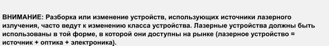
Некоторые мощные светодиодные устройства могут быть опасны для глаз человека. Будьте ответственны при использовании подобных элементов! Помните, что аудитория не проинформирована об особенностях вашей световой системы.
Судьи вправе потребовать документацию на используемое оборудование для принятия окончательного решения о допуске в отдельных случаях. В случае обнаружение опасности системы, к ней могут применяться правила по использованию Лазеров классов 2М и выше.
При использовании высокомощных аудиосистем, громкость звука не должны превышать 80 дБ на расстоянии 1 метра от робота.
Громкость проверяется во время допуска. В случае нарушения система может быть не допущена до соревнования.
Системы сжатого воздуха не должны превышать 4 бар, за исключением предварительно собранных коммерческих изделий, и только в том случае, если:
- Эти устройства не были модифицированы.
- Они соответствуют европейским нормам безопасности.
- Они безопасны.
Использование газовых баллончиков под давлением, таких как баллончики CO2, запрещено.
Чтобы избежать помех между командами, рекомендуется кодировать сигналы связи. Мы настоятельно рекомендуем командам использовать инфракрасные устройства, чтобы учесть сильный рассеянный свет во время матча. Кроме того, эта яркость может варьироваться во времени и в зависимости от расположения игровой площадки в зале.
Мы также напоминаем командам, что организаторы используют высокочастотные радиоустройства и ни при каких обстоятельствах не могут нести ответственность за неисправности, с которыми сталкиваются роботы.
ВНИМАНИЕ: за краями игровой зоны могут находиться элементы, которые могут мешать распознаванию цвета или сигналам связи, такие как:
- декор, освещение и предметы игровой зоны
- люди (судьи, команды и т.д.)
- электронные системы (микрофоны, камеры и т.д.)
Категорически запрещается просить людей уйти или убирать предметы декора вокруг игровой площадки!
Видимость: На одной из одной сторон каждого робота должна быть оставлена прямоугольная площадка 100мм x 70мм. По возможности, данная область должна быть видна с наивысшей точки игрового поля. Она так же должна быть визуально доступной на протяжении большей части матча. Команды могут получить наклейки, предназначенные для размещения в этой области.
Очень желательно (но не обязательно) не оставлять пустых областей и сквозных отверстий в роботе, чтобы упростить обнаружения другими роботами.
Стартовый шнур автономных роботов: Хотя бы один элемент команды, находящийся на столе (кроме встроенных маяков), должен быть оснащен легкодоступным пусковым устройством. Это устройство должно срабатывать при вытягивании шнура длиной не менее 500 мм. Этот шнур не должен оставаться прикрепленным к элементу после вылета. После срабатывания устройства автономные роботы могут стартовать.
Никакие другие системы запуска (дистанционное управление, ручной кулисный переключатель и т.д.) не будут допущены.
Список элементов, который могут быть оснащены пусковым устройством:
- Робот
- МАРС
- Фиксированные маяки
- Устройство удалённых вычислений
Система избегания столкновений: Все команды обязаны оснастить своих роботов системой избегания столкновений. Эта система предназначена для предотвращения столкновений между роботами во время матча. Этот пункт будет систематически проверяться во время проверки роботов и получения допуска в соревнованиям.
Встроенная/бортовая система поддержки маяков локализации: Настоятельно рекомендуется разрабатывать робота(-ов) с системой поддержки маяка, предназначенной для размещения Мобильного Маяка Локализации (ММЛ) команды-соперника. Этот Маяк необходим для работы Системы Предотвращения Столкновений. Данная система поддержки должна следовать следующим требованиям:
- Форма должна быть выпуклой и может быть: минимальный размер — цилиндр 70мм диаметром, максимальный размер — 100мм квадрат в проекции;
- Стенки должны быть жесткими и непрозрачными (в видимом спектре и в инфракрасном);
- Верхняя грань – расположена на высоте 430 мм от уровня Игрового Поля и позволяющая разместить ММЛ;
- Поверхность Платформы должна быть полностью покрыта липучкой VelcroTM (сторона с жесткими «крючками»);
- Платформа Поддержки ММЛ должна располагаться в центре симметрии робота в нераскрытой (стартовой) конфигурации, и, насколько возможно, сохранять центрально-симметричное положение относительно окружности 20см с центром, совпадающим с центром робота, также и при раскрытии механизмов;
- В системе поддержки могут располагаться только датчики и электронные схемы, они также не должны выходить за пределы проекции Платформы;.
- Система поддержки должна быть сплошной насколько это возможно в промежутке высоты от высотой 350 мм до 430 мм. Команды, использующие вращающие устройства, должны убедиться, что часть, удаляемая из системы поддержки не превышает 2см (исключение правила минимального размера сплошной оболочки системы поддержки).
- Система должна быть устойчивой, неподвижной относительно структуры и выдерживать вес не менее 400 грамм (маяк команды соперника и aruco тег), без сгибания или сжатия.
Система не обязательна, команда вправе отказаться от предоставления системы поддержки для ММЛ. В этом случае, если у соперника есть ММЛ и он хочет использовать его во время матча или использует поддержку маяка для локализации робота, отказ от предоставления системы поддержки для ММЛ станет причиной дисквалификации (с данного матча).
Мобильные автономные робототехнические системы(или МАРС) должны соблюдать те же ограничения в конструкции и безопасность, что и роботы (Кнопка аварийной остановки, система избегания столкновений, мешок для литиевых батарей и проч.). МАРС должны иметь возможность провести матч на любой из сторон игрового поля.
Они могут быть запущены с помощью стартового шнура длиной в 50 см в начале матча, либо в течение матча роботом. Робот может касаться или общаться с МАРС своей команды в течение матча, но МАРС должен перемещаться самостоятельно.
Допуск МАРС не является обязательным и не влияет на возможность участия команды в матче. Допуск основного робота является обязательным условием. Однако, для участия в матче, МАРС обязан быть допущен, и если основной робот не имеет возможности участвовать, МАРС может участвовать без него при согласовании с судьями и командой.
МАРС имеет следующие ограничения по размеру:
● Все МАРС должны помещаться в стартовых зонах и находится строго на поверхности игрового поля. ● МАРС имеет ограничение по высоте на старте – 150 мм. ● МАРС должен быть больше, куб с ребром 60 мм. ● МАРС должен иметь периметр на момент запуска не более 600 мм. ● МАРС может увеличить свой периметр во время матча до 700 мм. ● МАРС может изменять свою высоту и перемещается в пределах 350 мм. ● МАРС должен иметь чистую поверхность, размерами 30 x 30мм для меткис номером. ● Вес МАРС не может превышать 1.5 кг. ● МАРС не могут быть активированы вне игрового поля (участниками команды, пультом управления и т.д.)
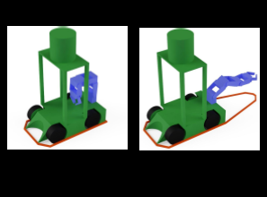
На МАРС не распространяются ограничения:
- Наличие мачты под маяк.
- Поддержка маяка(нельзя поставить ArUco маркер).
1.7. G. СИСТЕМЫ МАЯКОВОЙ ЛОКАЛИЗАЦИИ
This heading has no text of its own. Its content is in the clauses below it.
Команды могут разработать полную систему локализации маяков; в этом случае на игровой площадке есть определенные зоны, где эти маяки могут быть установлены. По просьбе противника и только в случае обоснованности роботы могут быть оснащены флагштоком для установки маяка противника выше. (см. подраздел G.5.).
Все маяки (стационарные маяки, мобильные маяки и центральное устройство слежения) должны оставаться на своих опорах в течение всего матча. Все инструкции по технике безопасности роботов в равной степени применимы к маякам.
Фиксированные маяки, центральный маркер, маяки, встроенные маяки и их соответствующие опоры описаны ниже.
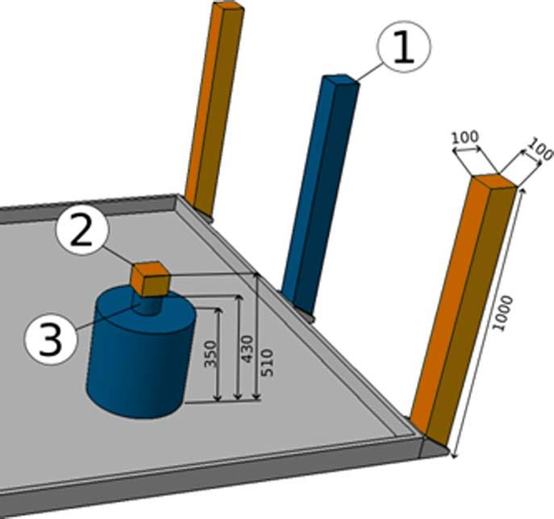
Пример расположения маяков
Оглавление:
- стационарный маяк (максимальные размеры W x W x H: 100 x 100 x 1000 мм)
- мобильный маяк (максимальные размеры: L x W x H: 100 x 100 x 80 мм)
- поддержка маяков
Маяк может быть установлен на каждом из роботов соперника, чтобы определить их местонахождение. Он должен быть установлен на специальной мачте на высоте 430 +- 5 мм над игровой площадкой.
Максимальный размер мобильного маяка представляет собой квадратный параллелепипед со стороной 100 мм и высотой 80 мм.
Верхняя сторона бортового маяка должна быть плоской и покрыта липучкой VelcroTM со стороны крючка, а нижняя сторона маяков должна быть покрыта бархатной стороной VelcroTM.
Рекомендуется, чтобы цвет маяков был в основном белым или очень четким, чтобы способствовать их обнаружению на темном фоне.
Используемые маяки должны иметь реальный функционал и приносить пользу. Любой "бесполезный" или утяжеленный маяк будет отклонен организаторами.
Вес маяка не должен превышать 300 г
Каждая команда может разместить до трех стационарных маяков на стационарных опорах. Эти стационарные опоры предоставляются команде по требованию и будут размещены вокруг игровой площадки.
Экшн-камеры, не полезные для хода игры, запрещены в фиксированных маяках.
Стационарные маяки должны помещаться в квадратный параллелепипед со стороной 100 мм и высотой 1000 мм. Вес не должен превышать 1.5 к
Опоры для стационарных маяков представляют собой квадратные поверхности со сторонами 100 мм, расположенные на уровне земли стола и на расстоянии 44 мм от края игровой поверхности (см. расположение на плане стола). Они имеют паз шириной 10 мм от центра до стороны, ориентированной на внешнюю сторону стола. Сторона, ориентированная на внешнюю сторону стола, открыта, другие стороны опоры могут быть закрыты.
Из-за большой высоты, стационарные маяки должны быть жестко зафиксированы. В пазе необходимо закрепить стационарные маяки с помощью резьбового стержня диаметром 8 мм и барашковой гайки. Размер винта не учитывается в габаритных ограничениях стационарных маяков. Отсутствие этой системы крепления будет препятствовать утверждению стационарных маяков.
Чтобы облегчить идентификацию роботов на поле и иметь возхможность проводить тяжелые вычисления, предоставляется возможность разместить устройство отслеживания роботов на общей платформе, расположенной на центральной оси симметрии (см. чертеж), на краю длинной стороны стола (70 мм над полом стола).
Вычислительное устройство должно быть размещено на платформе цвета команды. Он не должен возвышаться над горизонтальной плоскостью более, чем на 160 см от поверхности платформы, и не должен опускаться ниже платформы больше чем на 22 мм (толщина плавтформы), т.е. зоны 45 см на 32 см. Смещение разрешено на 10 см только назад. Его масса не должна превышать 5 кг.
Запрещено располагать устройство, даже частично, на территории соперника.
Следует отметить, что центральное устройство слежения может подвергаться вибрациям из-за перемещений роботов на части стола, на котором оно расположено. Фиксация: Толщина платформы для крепления устройства составляет 22 мм.
Монтажная площадка имеет паз шириной 10 мм от центра опоры маяка до середины стороны. Этот паз необходимо использовать для фиксации центрального устройства слежения с помощью резьбового стержня диаметром 8 мм. и барашковой гайки. Все элементы, входящие в состав центрального устройства слежения, должны быть правильно закреплены между собой, чтобы ни один элемент не выходил за периметр центрального устройства слежения или не упал со стола.
Отсутствие этой системы крепления препятствует прохождению допуска системы.
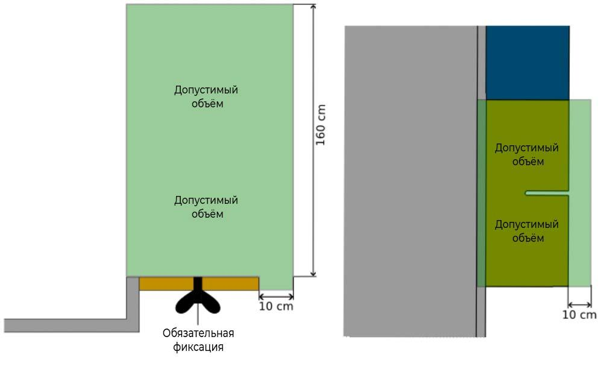
Установка вычислительного устройства
Стационарные маяки и центральное устройство слежения могут быть соединены проводной связью. Это соединение не должно при каких-либо обстоятельствах мешать матчу. Монтаж всей системы должен быть выполнен до начала матч, во время подготовки. Это не должно мешать подготовке команды противника. Во время подготовки может быть протянута временная проводная связь между роботом и одним или несколькими маяками. Так разрешается делать только в том случае, если не причиняются неудобства команде противника. Элементы системы слежения и центральное устройство слежения не должны воздействовать на игровые элементы (напоминание: роботы и МАРС не являются элементами игры).
Во время каждого матча роботам будет назначен маркер (предоставленный организатором), Расположенный на верхней части мачты поддержки маяка или на верхней части бортового маяка (если имеется) (рисунок 9). Этот маркер имеет две цели:
- позволить зрителям определить команду, к которой принадлежит робот;
- позволить центральному устройству слежения идентифицировать и локализировать роботов
Маркер представляет собой квадрат шириной 10 см, толщиной 2 см (± 2 мм) и массой меньшей или равной 80 г. На верхней стороне расположен виниловым тег ArUco 4x4 (по центру) размером
7 сантиметров. Вокруг тега ArUco нарисован белая полоса шириной 1 см для облегчения его обнаружения. Контур шириной 0,5 см того же цвета, что и команда, нарисован по краю верхней поверхности. Цвет команды также занимает боковая сторона маркера (рисунок 14).
- Роботы синей команды получают ArUco 4x4 теги между 1 и 5.
- Роботы желтой команды получают ArUco 4x4 теги между 6 и 10.
- Все роботы получат различные маркеры. Их невозможно будет ни выбрать, ни выбрать на какого робота они будут размещены.
- Теги ArUco 4x4 от 11 до 50 зарезервированы для игровой площадки, но не все из них обязательно будут использованы
ВНИМАНИЕ: командам не разрешается использовать метки ArUco 4x4 от 0 до 50.
- Теги ArUco 4x4 от 51 до 70 зарезервированы для синей команды.
- Теги ArUco 4x4 от 71 до 90 зарезервированы для команды желтого цвета.
Однако допускаются другие теги с номерами свыше 90 и другие размеры, кроме 4x4.
- Маркер идентификации робота (Тэг № 1) (b) Маркер на поддержке мобильного маяка.
Опознавательный знак и его расположение на бортовом маяке
1.8. H. МАТЧИ
Только 2 членам от команды разрешено находиться в зоне подготовки и проведения матчей.
Для проведения соревнований, мы просим вас находиться в месте размещения команды с роботами за 30 минут до старта и до окончания матча с вашим участием.
В случае проблемы, организаторы могут позволить отложить матч на более позднее время, но не выходящее за рамки текущего Раунда.
В начале матча элементы игровой зоны и сама игровая зона устанавливаются в соответствии со схемами, приведенными в приложении.
По прибытии на игровую площадку у каждой команды есть не более трех минут на то, чтобы приступить к размещению роботов, маяков и другого оборудования. По окончании времени подготовки роботы не имеют права двигаться до начала матча.
Неготовность робота к концу этого времени грозит команде поражением в матче.
Кроме того, роботы другой команды все равно будут вести свою игру на игровой площадке. Для признания победителя команде необходимо набрать очки.
Когда обе команды закончили установку или время подготовки закончилось, судья спрашивает у участников, готовы ли они, и они устанавливают метку стартовой зоны. С этого момента команды не имеют права прикасаться к своим роботам. Допускается нажатие командами кнопки аварийной остановки после окончания времени подготовки, чтобы сохранить аккумуляторы и приводы в ожидании начала матча. Споры о расположении игровых элементов после начала матча не допускаются.
По сигналу судьи каждый робот включается, и у него есть 100 секунд на выполнение действий.
Никто, кроме судьи, не может прикасаться к роботам и игровым элементам, если на это нет специального указания судьи.
Никакие элементы, вынесенные за пределы игрового поля, не могут быть поставлены обратно на стол до окончания матча и подсчета очков.
Судьи имеют право ограничивать перемещение и расположение участников вокруг поля.
По истечении 100 секунд роботы должны остановиться и выключить все свои актуаторы. При этом разрешается держать включенными любые динамические дисплеи.
Никто, кроме судьи, не может прикасаться к роботам и игровым элементам, если на это нет специального указания судьи. Судьи подсчитывают очки, сообщают результат матча, включая очки, командам. Если команды согласны, они заверяют протокол матча, забирают своих роботов и освобождают полигон. Если команды не согласны, они спокойно обращаются к судьям. Роботы остаются на месте до разрешения спора. Судейские решения являются окончательными. В случае возникновения неоднозначной ситуации судьи оставляют за собой право решать, переигрывать матч или нет.
Судьям разрешается объявить об окончании игры заранее, до окончания основного времени, если обе команды согласны с этим (например, если роботы заблокированы).
Некоторые действия во время матча могут привести к штрафам.
Список действий во время матча, которые могут привести к предупреждению, либо штрафам (если предупреждение уже было): ◦ Потеря детали или части робота на игровом поле: штраф 20 баллов. ◦ Порча стола или игровых элементов: штраф 30 баллов. ◦ Нерабочая система избегания столкновений: штраф 30 баллов. ◦ Фальстарт: штраф 50 баллов. ◦ Робот или МАРС двигается после окончания матча: штраф 50 баллов. ◦ Превышение времени подготовки: штраф 50 баллов. ◦ Изменение стартовой зоны по окончанию времени подготовки: штраф 50 баллов. ◦ Нечестное и неспортивное поведение: штраф 50 до 100 баллов. ◦ По решению судей: штраф 50 до 100 баллов. ◦ По решению организаторов: штраф 50 до 100 баллов. Следующие действия во время матча, которые могут привести к дисквалификации команды: ◦ робот и МАРС(-ы) не покинули стартовую зону. ◦ снижение баллов противника в защищенной зоне или кража защищённого игрового элемента. ◦ перемещение робота по защищенной области соперника. ◦ Повторное превышение времени подготовки. ◦ Нарушение ограничений по размерам. ◦ Повторный фальстарт. ◦ Намеренный бросок предметом в окружающих. ◦ Намеренная фиксация к столу или его вибрация. ◦ Вмешательство члена команды на игровом поле, игровых элементов или роботов после времени подготовки (кроме нажатия аварийной кнопки). ◦ Вмешательство члена команды на игровом поле, игровых элементов или роботов во время матча. ◦ Команда не способна сыграть до конца раунда. ◦ Согласно решению судей. ◦ Согласно решению организаторов. Некоторые действия могут привести к дисквалификации с турнира. Список действий, которые могут привести к дисквалификации с турнира: ◦ Намеренное отключение системы избегания столкновений. ◦ Конструирование робота, похожего на роботов других команд (прим.: схожие шасси или одинаковые актуаторы). Если в течение года вы увидите команду с дизайном, похожим на ваш, как можно скорее сообщите организаторам. ◦ Намеренное повреждение робота другой команды. ◦ Согласно решению организаторов.
Во время матча может быть применен только один штраф. При применении нескольких штрафов учитывается только наибольший.
Так называемые “дополнительные” баллы засчитываются, только при наличии обычных баллов за действие.
При дисквалификации или отрицательном значении счёт приравнивается к 0.
Только судьи имеют право вмешиваться в игровое поле и касаться роботов после времени подготовки и во время матча. В случае возникновения проблемы обратитесь к судье, чтобы избежать дисквалификации.
Видеосудейство запрещено.
Общее определение нечестной игры: "Если цель состоит в том, чтобы нанести вред без созидания, то это нечестная игра".
Оценка игры остается полностью на усмотрение судьи и не может быть оспорена после матча.
1.9. I. СОРЕВНОВАНИЯ
This heading has no text of its own. Its content is in the clauses below it.
Соревнования Eurobot проходят в 3 этапа:
- региональный: где они могут проводиться
- национальный: в странах, где зарегистрировалось более 3-х команд, необходимо проводить соревнования для отбора в международный Финал
- европейский: в состав дружеских соревнований входят команды со всего мира Каждое мероприятие состоит из трех стадий:
- Статическая и динамическая проверка роботов;
- Квалификация;
- Опциональная стыковочная стадия;
- Финал.
No text was extracted under this heading. What belongs here is a drawing, a table, or text the source numbers as part of another clause: see page 24 of _assets/rules/source/Eurobot_PRO_Rules_1.2_RU.pdf.
Квалификационный тур состоит из серии квалификационных (отборочных) раундов. Команды, допущенные до соревнований, могут принять участие в 3-х матчах (иногда в большем количестве матчей, если так решат организаторы). Для определения команд, прошедших в финальный тур, создается рейтинг на основе баллов, набранных во время квалификационных раундов. По завершении квалификационных раундов, в случае равенства набранных баллов у некоторых команд, они будут сравниваться по количеству набранных баллов без учета бонусных баллов. В случае, если команды по-прежнему остаются в равном положении, судьи имеют право организовать дополнительные раунды для таких команд. В этом случае, пары команд, соревнующихся за одно место, будут выбраны случайным образом, а победитель по результатам матчей отправится в финальный тур. В случае нечетного числа команд в группе, будет организован один дополнительный матч для команды, оказавшейся без пары, а соперник для нее будет выбран случайным образом из группы
Количество команд Команд в финале
N<=16 4
16<N<=50 8
50<N 16
Перед тем, как выступать на Игровом Поле, роботы осматриваются судьей, который проверяет их на соответствие правилам. Роботы должны быть готовы к демонстрации всех своих возможных действий. Так же будет проведена проверка и дополнительных систем (маяков, ву и т.д.)
В течение 100 секунд роботы должны выполнить хотя бы одно действие. Роботы ставятся в игровую ситуацию, но без присутствия команды соперника. Также проверяются некоторые специфические особенности, предусмотренные регламентом (таймер, уклонение от соперников и т.д.).
Если сборка, состоящая из основного робота и МАРС, удовлетворяет этим условиям, она объявляется одобренной.
Необходимо сообщать судьям о любых существенных изменениях (функциональных, конструктивных, размерных...), внесенных в робота (роботов) или любой другой элемент после утверждения. Судьи проверят внесенные изменения и повторно утвердят робота, если сочтут это необходимым. В случае нарушения команда может быть объявлена дисквалифицированной с соревнований.
Дополнительная фаза стыковочных матчей может быть организована в том случае, если на мероприятии проводятся два конкурса, первый из которых является квалификацией на второй. Например:
- региональная стадия (A) национальная стадия (B) Организатор может провести отборочный этап обоих матчей (A) и (B) либо параллельно, либо смешанным способом. В этом случае стыковочная фаза может быть организована так, чтобы позволить командам из матчей (A) пройти отбор в матчах (B), освобождая их от необходимости играть все матчи из квалификационной фазы (B) в пользу этих стыковочных матчей. Команды, участвующие в данной фазе:
- команды из (A), в количестве, соответствующем квоте, выбранные по результатам квалификационной стадии (A) или посредством выбора комитета жюри.
- Команды из (B), числом равным командам из (A), прошедшие квалификацию на последних позициях (В) в количестве равном прошедшему числу из (А) На этом стыковочном этапе для каждой участвующей команды будет сыгран один матч. Участвующие команды из (A), прошедшие квалификацию в рейтинге, будут играть в порядке их ранжирования с командами из (B) с самым низким рейтингом. И команда(-ы) из (A), прошедшая квалификацию для этой фазы плей-офф решением жюри, будет играть против команд с самым высоким рейтингом (B) в случайном порядке. Каждая команда, выигравшая стыковочный матч, будет включена в основную сетку финальной фазы (B)..
После квалификационных раундов команды будут участвовать в финальном туре.
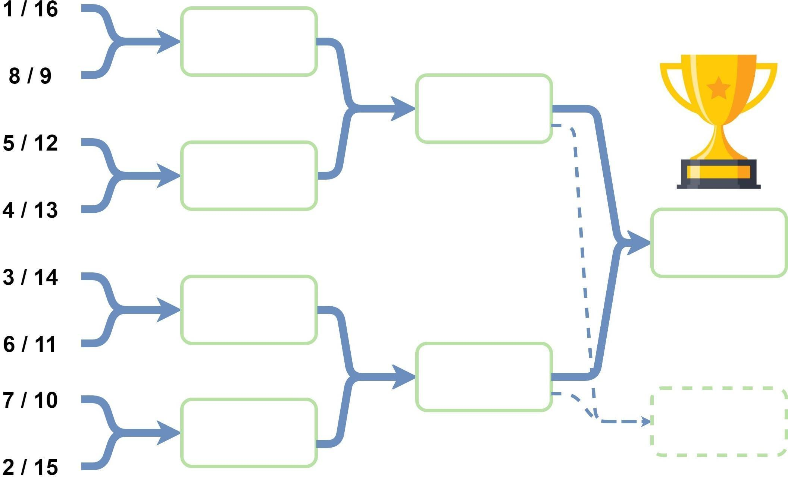
Схема финала
Матчи финального тура играются «на вылет», организаторы вправе изменить систему проведения финальной стадии. В случае двойной дисквалификации, двойного поражения или ничьей, матч незамедлительно переигрывается; если результат повторной игры по-прежнему двойная дисквалификация, двойное поражение или ничья, победитель определяется в соответствии с очками, заработанными в течение квалификационных раундов. Матчи за первое место играются по системе «лучший из трёх». Команда, подряд выигравшая 2 матча, считается победителем.
В этом случае будьте внимательны: команды должны позаботиться о том, чтобы их Автономным роботам хватило заряда батарей на все матчи до победы одной из команд!
При проведении региональных совещаний количество команд, прошедших квалификацию на одно региональное совещание, пропорционально общему числу команд, зарегистрированных на национальном уровне. Лучшие команды в рейтинге, составленном в конце отборочного этапа каждой региональной встречи, а также по крайней мере одна команда, выбранная организаторами из числа обладателей специальных призов (например, креативность, честная игра, презентация и т.д.).
1.10. J. ПРИЛОЖЕНИЕ
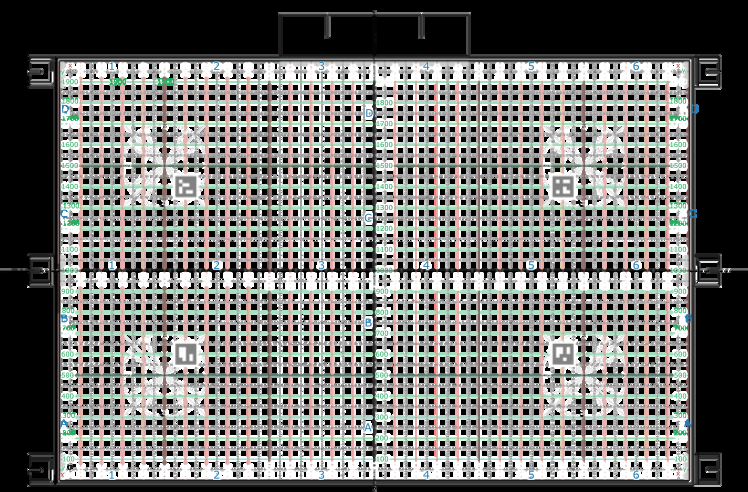
220 220
Поддержка вычислительного устройствап
J.0.c.. Платформа статических маяков
122 22 100
122 22 100
Поддержка стационарных маяков
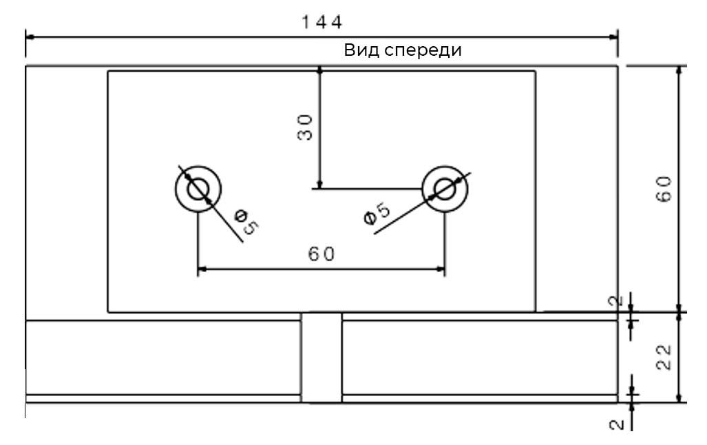
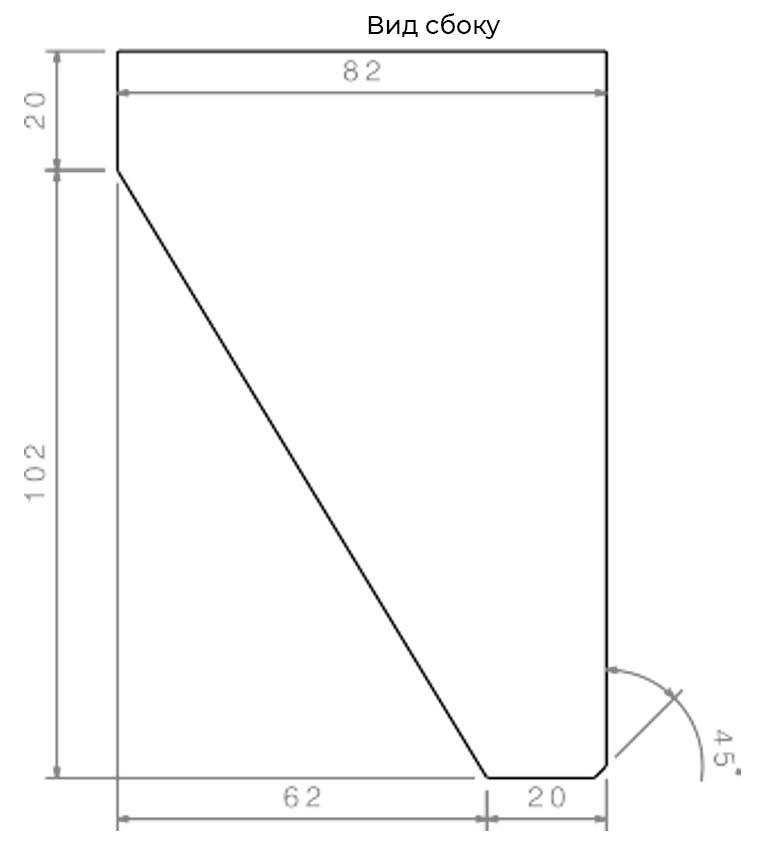
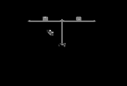
Поддержка стационарных маяков
Эелемент Материал Комментарий
Дерево обклееное винилом Поддержка вычислительного устройства Дерево обклееное винилом Поддержка маяка
3Д печать обклееная винилом Поддержка маяка
3Д печать или дерево обклеенаые Маркре робота винилом
Все размеры указаны в мм. Точность изготовления соответствует нижеприведенной таблицы, если явно не указано обратное.
Dimensions General Tolerances 1. 50 ≤ 20 ± 2. 50 > 20 and ≤ 70 ± 4. 00 > 70 and ≤ 150 ± 5. 00 > 150 ±
No text was extracted under this heading. What belongs here is a drawing, a table, or text the source numbers as part of another clause: see page 32 of _assets/rules/source/Eurobot_PRO_Rules_1.2_RU.pdf.
No text was extracted under this heading. What belongs here is a drawing, a table, or text the source numbers as part of another clause: see page 32 of _assets/rules/source/Eurobot_PRO_Rules_1.2_RU.pdf.
ЦВЕТ РАЛ CMYK RGB
Traffic red RAL 3020 Mat 0%, 100%, 100%, 10% 187, 30, 16
Mint green RAL 6029 Mat 100%, 5%, 90%, 30% 0, 111, 61
Traffic Blue RAL 5017 Mat 100%, 60%, 0%, 10% 0, 91, 140
Traffic yellow RAL S 0580-Y50 Mat 0%, 57%, 100%, 0% 249, 127, 16
Signal Violet RAL 4008 Mat 50%, 90%, 0%, 5% 132, 76, 130
Telemagenta RAL 4010 Mat 15%, 100%, 15%, 10% 188, 64, 119
Mahogany brown RAL 8016 Mat 40%, 80%, 70%, 70% 76, 43, 32
Signal Black RAL 9017 Mat 50%, 30%, 50%, 100% 42, 41, 42
White RAL 9010 Mat 0%, 0%, 5%, 0% 241, 236, 225
Pebble grey RAL 7032 Mat 15%, 10%, 25%, 20% 181, 176, 161
2. Евробот, игровые правила 2026
2.1. A. ПРИМЕЧАНИЕ
Обратите внимание на версию правил. Также важно помнить, что русская редакция не является исключительно переводным документом – текст правил адаптирован к проведению национальных соревнований в России. Судьи национальных квалификационных соревнований Eurobot Open и Eurobot Junior руководствуются исключительно русским вариантом правил!
2.2. B. ИДЕЯ СОРЕВНОВАНИЯ
Евробот – это мероприятие, в котором могут принять участие любители робототехники, объединившись в команды. Участники команд исследователи, которые участвуют в соревнованиях в рамках учебного или идейного проекта, как группа друзей или независимый клуб. Евробот преследуют одну и ту же цель: дать возможность людям активно обучаться и на практике применять полученные знания и умения в дружеском соревновании.
Правила соревнований в разных лигах основаны на одной идее. Организаторы предоставляют платформу для проведения соревнований Евробот. Эта платформа подразумевает создание Автономных роботов для Евробот Open и Pro и управляемых роботов для Евробот Junior и Starter. Организаторы соревнований Евробот автономных лиг могут легко проводить соревнования управляемых лиг и наоборот.
2.3. C. ТЕМА СОРЕВНОВАНИЯ
Зима близко, и экологи обнаружили аномальную миграцию белок. Река Ореховая затопила лес! Бельчатам пришлось быстро перебраться в новое место обитания и теперь у них совсем нету времени подготовить запасы на зиму! К счастью на помощь зверятам отправился отряд роботов волонтёров. Смогут ли они помочь пушистикам пережить зиму?
Задания на данный сезон:
● СОХРАНИМ ОРЕХИ ТЁПЛЫМИ!
● НАШЁЛ - ЗНАЧИТ ТВОЙ!
● НИ ЖАРКО, НИ ХОЛОДНО
● ДОМ, МИЛЫЙ ДОМ
● ВРЕМЯ ОБЕДА!
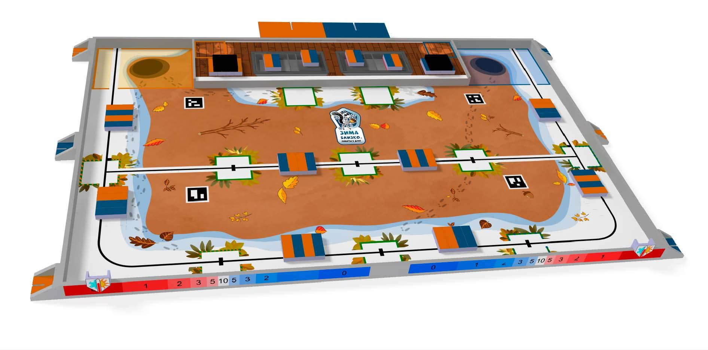
Р1: Общий вид игрового поля
2.4. D. ИГРОВОЕ ПОЛЕ
This heading has no text of its own. Its content is in the clauses below it.
Организаторы соревнований стремятся изготовить Игровую Зону как можно точнее и ближе к эталону.
Тем не менее, они вправе внести некоторые изменения, если сочтут их необходимыми. В случае значительных изменений Игрового Поля или Игровых Элементов они будут опубликованы в дополнительном документе на веб-сайте НОК Eurobot России (http://www.eurobot-russia.org или http://eurobotrussia.ru).
Имейте в виду, что качество поверхностей разных игровых полей может отличаться, также оно может ухудшаться в ходе соревнований по естественным причинам.
Жалобы, связанные с отклонением размеров не рассматриваются.
Рисунки игрового поля в данном документе приводятся для чемпионата автономных роботов, некоторые их элементы (например, поддержка для маяка или область для внешнего вычислительного устройства) избыточны в случае чемпионата управляемых роботов..
Игровое поле представляет собой горизонтальную прямоугольную поверхность размером 3000 мм на 2000 мм, с бортиками высотой 70 мм с каждой стороны. В зависимости от процесса строительства она может состоять из одной или нескольких частей (например, из 3-х секций по 1000 мм на 2000 мм). Обратите внимание, что стыки таких частей могут быть неидеальны и создавать помехи для перемещения роботов. Любые возражения по этому поводу во время соревнований не рассматриваются.
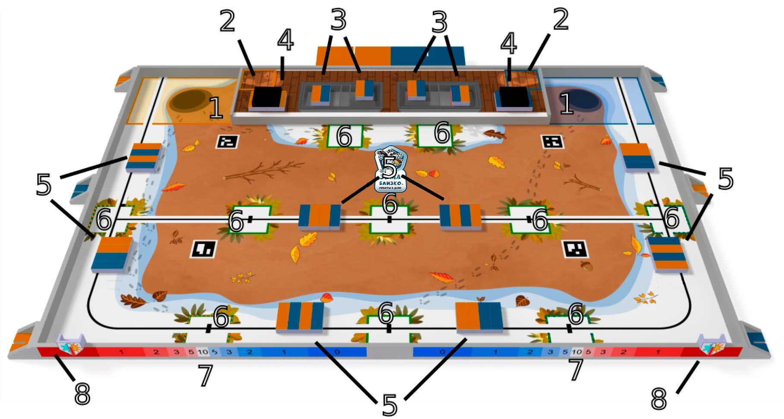
Рис. 2: Подробный вид игрового поля
- Зоны сбора 1. Гнёзда 6. Кладовые 2. Стартовые зоны МАРС в амбаре 7. Термометр 3. Холодильники 8. Указатель 4. Зоны погрузки
This heading has no text of its own. Its content is in the clauses below it.
Каждая команда имеет одну стартовую и финишную зону. Этими зонами являются гнёзда белок. Это прямоугольные зоны, размером 45 см на 60 см, по периметру которого нанесена линия в цвет команды. Линия является частью стартовой зоны. Стартовые зоны расположены в углах и вдоль бортов игрового поля.
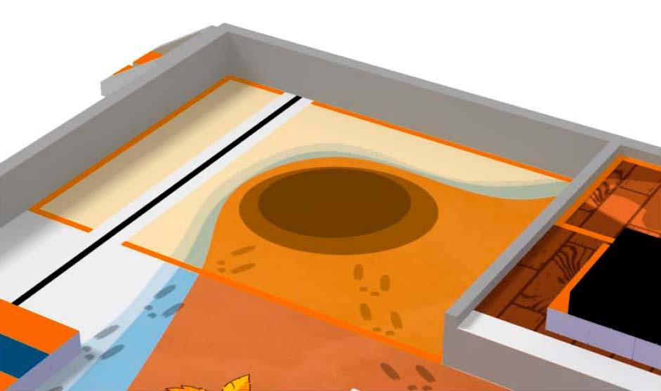
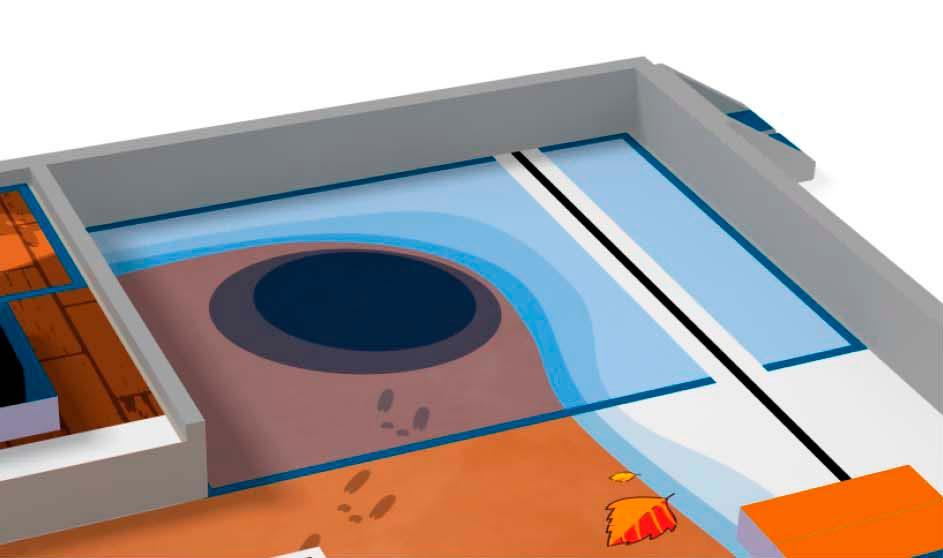
- Стартовая и финишная зона синей команды (b) Стартовая и финишная зона оранжевой команды
Рис. 3: Зоны желтой и синей команд
По окончании времени подготовки вертикальная проекция роботов не должна выходить за пределы стартовой зоны.
Убедитесь, что ваши роботы полностью помещаются в свою стартовую зону. Цветные линии и борт стола, примыкающий к зоне, также входят в стартовые зоны.
Ящики с орехами: Ящики с орехами- это деревянные бруски размерами 150 мм x 50 мм x 30 мм. Их большие стороны окрашены в цвета команд (одна сторона синяя и противоположная - оранжевая). Остальные четыре стороны не окрашены. На поле расположено 48 ящиков с орехами. Они размещены в зонах сбора, погрузки и холодильниках. Вокруг каждого ящика наклеено кольцо из винила по центру бруска. Винил имеет окраску в цвета команд на двух поверхностях и содержит тег Aruco, размером 40 мм со значением 36 для голубой команды и значением 47 для желтой команды
Ящики с гнилыми орехами: Ящики с гнилыми орехами - это бруски дерева, размером 150 мм x 50 мм x 30 мм, полностью окрашенные в черный цвет. Всего на поле присутствуют 6 таких ящиков. Они расположены в погрузочной зоне. На ящиках наклеены кольца из винила по центру брусков. Винил окрашен в черный цвет и содержит 2 тега Aruco с номерами 40 и 41.
Термометры: Термометр - это полоска винила, наклеенная спереди игрового поля. Она разделена на 11 зон с нумерацией, с помощью которых подсчитываются очки.
Указатель: Указатель - это элемент, предоставляемый организаторами. Команда может привезти свой собственный курсор, если он соответствует ограничениям по размеру (100 мм x 100 мм x 45 мм), не имеет механизмов для перемещения и однозначно указывает температурную зону термометра.
Амбар: Амбар это зона по центру стола, поднятая над его поверхностью на 55 мм. Она имеет стороны 450 мм на 1800 мм и ограничена своими краями. В амбаре расположены 4 зоны холодильников размером 100 мм на 150 мм, ограниченными прерывистой линией красно-оранжевого или красно-синего цвета (по цвету команд), которые включены в зону холодильника. В каждом холодильнике размещены 2 ящика (по 1 каждого цвета). Доступ к ним разрешён только МАРС.
Зона погрузки: Зоны погрузки расположены на переднем краю поля и с каждой из сторон амбара. Каждая из зон содержит 7 ящиков, они расположены в виде 2 ярусов. Снизу расположены 4 ящика с орехами, широкой стороной вниз и 3 ящиками с гнилыми орехами сверху. Доступ к ним разрешён только МАРС.
Кладовые: Кладовые это зоны, расположенные на поверхности игрового поля, они обведены зеленой линией, которые входят в зону кладовых. Размер кладовых 200 мм на 200 мм.
Зона сбора: Зоны сбора - это зоны, расположенные на поверхности игрового поля и обведенные красными линиями, которые входят в них. Они имеют размер 15 см на 20 см и содержат 4 ящика с орехами, по 2 цвета каждой команды, которые расположены в случайном порядке.
Робобельчата: Построенные командами МАРС. Они запускаются во время матча и должны быть изначально расположены в стартовых зонах МАРС.
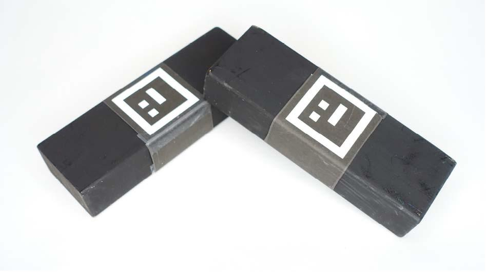
- Ящики с орехами (b) Ящики с гнилыми орехами
2.5. E. ДЕЙСТВИЯ
This heading has no text of its own. Its content is in the clauses below it.
Экологи доставили в лес контейнеры с орехами. Робо-белка должна собрать контейнеры для бельчат и довести их до места, откуда пушистики смогут растащить их на запасы
Для этого действия используются ящики с орехами, кладовые и гнезда (стартовые зоны).
Действия:
● Задача - собрать как можно больше ящиков с орехами и разместить их в кладовых или гнёздах.
Ограничения:
● Ящик с орехами является засчитанным в зоне если вся или часть его вертикальной проекции находится в зоне и сам бруско плоско лежит на игровом поле. ● Ящик с орехами, расположенный в гнезде будет засчитан команде, вне зависимости от цвета большей стороны сверху и не может быть украден другой командой. В гнезде можно разместить не более 6 ящиков с орехами. Лишние ящики зачислены не будут. ● Ящик с орехами, помещенный в кладовые, действителен для команды, если его верхняя сторона окрашена в цвет команды или если она не окрашена в другие цвета. Количество ящиков с орехами, размещенных в этих зонах, не ограничено. Команда противника может украсть ящики с лесными орехами. ● На поле расположены по две кладовые для каждой команды (ближняя к гнезду и рядом с термометром). Эти зоны являются защищенными. Роботам соперника запрещено находиться в этих зонах и любым образом взаимодействовать с ящиками, расположенными в этих зонах. ● Каждая кладовая приносит бонус в конце матча. Чтобы зона принесла команде бонус, у команды должно быть абсолютное большинство ящиков с орехами соответствующего цвета в зоне. В случае ничьей бонус в данной зоне не начисляется. ● Элемент, который по окончании матча все еще находится под контролем робота или
СИМА, не будет засчитан.
2 балла за каждый ящик в гнезде.
3 балла за каждый засчитанный ящик в кладовой.
5 баллов за каждую зону, в которой ящиков больше, чем у команды соперника
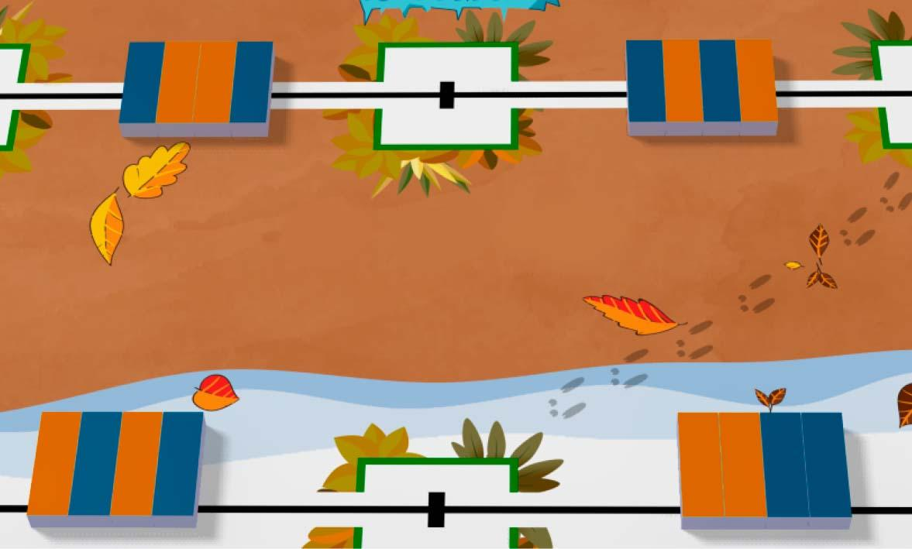
Рис. 5: Составленные ящики с орехами на момент старта матча.
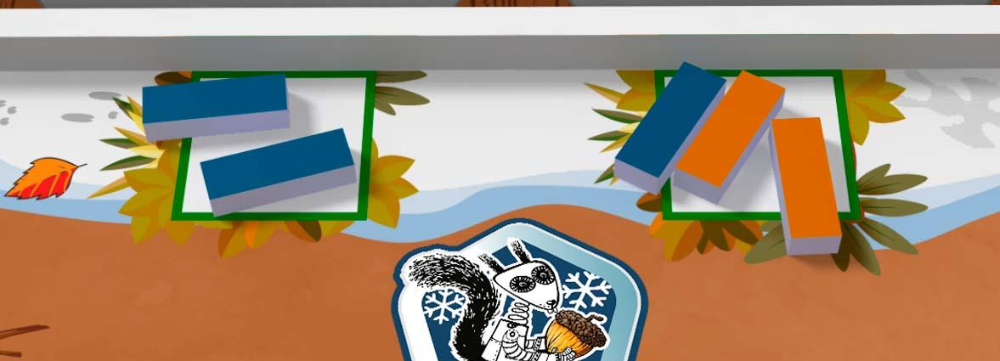
Рис. 6: Пример зон, засчитанных синей и оранжевой команд.
Бельчата очень быстро прибыли в лес и экологи не успели расставить все контейнеры с орехами! Чтобы не беспокоить зверят был сделан автоматический амбар, в котором работают ловкие робо-бельчата. Их задача - раздать оставшиеся запасы орехов из амбара. Однако будьте внимательны - некоторые ящики промокли и их содержимое сгнило!
Это действие включает в себя МАРС, амбар и погрузочные зоны.
Действия:
● Команда может разместить один МАРС в амбаре. Задача МАРС - опустошить холодильники и вынести ящики с орехами за пределы амбара. Пустые зоны холодильников надо заполнить ящиками с гнилыми орехами.
● МАРС - мобильная автономная робототехническая система, созданная командой. Для простоты идентификации желательно соответствие цветов основного робота команды и МАРС. Ограничения:
● Во время подготовки только 1 МАРС может быть размещён в стартовой зоне для МАРС, в амбаре и должен помещаться в внутри неё (20 см на 20 см). Цветные линии границы зоны, стенки игрового полигона (22 мм) и выступ (15 мм) вокруг зоны также являются частью стартовой зоны. ● МАРС может действовать в течение всего матча. ● Только 1 МАРС может перемещаться в амбаре. Основной робот не может взаимодействовать с элементами в амбаре, вертикальная проекция которых находится полностью в амбаре, если они не находятся под управлением робота. Основному роботу запрещено взаимодействовать с МАРС противоположной команды. ● На момент старта матча каждый холодильник содержит 2 ящика с орехами (по 1 цвету каждой команды в случайном порядке). Цель - опустошить холодильники и вывести ящики из амбара, чтобы основной робот мог их забрать. Холодильник считается пустым, если нет ящика с орехами, чья вертикальная проекция пересекается с зоной холодильника на момент окончания матча ● На момент старта матча каждая погрузочная зона содержит 3 ящика с гнилыми орехами. Задача - перенести эти ящики с гнилыми орехами в зоны холодильника. Зона холодильника считается заполненной ящиками с гнилыми орехами в том случае, если на поле присутствует хотя бы один ящик с гнилыми орехами, чья вертикальная проекция пересекается с зоной холодильника на момент окончания матча. ● Элементы, которые находятся под контролем МАРС на момент окончания матча не учитываются. ● Пустой холодильник или холодильник, заполненный ящиками с гнилыми орехами приносит баллы команде соответствующей цвету зоны.
2 балла за пустой холодильник по окончанию матча
5 баллов за холодильник, заполненный гнилыми орехами по окончанию матча.
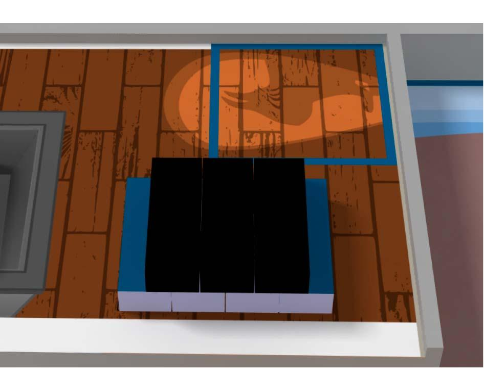
- Ящики с орехами и гнилыми орехами в
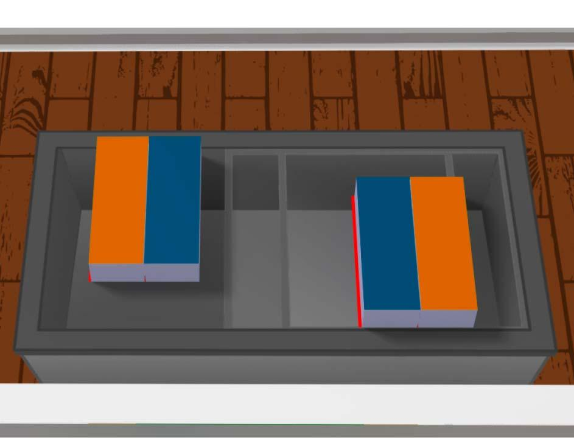
- Размещение ящиков на момент начала матча. погрузочной зоне на момент старта матча.
Рис. 7: Размещения орехов.
Чтобы орехи оставались свежими как можно дольше, важно хранить их в наилучших условиях. Вам нужно как можно точнее отрегулировать температуру в кладовых, потому что да, наши маленькие белочки умеют это делать (но не спрашивайте нас - как...).
Это действие включает в себя термометры и указатели температур.
Действия:
● Разместите указатель температуры как можно ближе к центру термометра команды.
Ограничения:
● На момент старта матча, команды должны расположить указатель температуры на 0-ой зоне термометра, не выходя за ее пределы. ● Робот должен переместить указатель в центр термометра. ● В случае, если робот или МАРС соперника перемещает указатель, то команде автоматически засчитывается максимальный балл за это действие.
X баллов в зависимости от того, на какой зоне расположен указатель. Количество баллов зависит от числа, написанного на зоне, на которую показывает указатель.
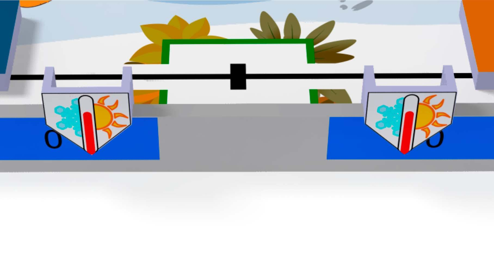
Рис. 8: Термометр и указатель в стартовой позиции.
Как только сбор орехов закончился, робо-белке пора возвращаться в тепло своего гнездышка, подальше от снега и приближающейся зимы. Но будьте осторожны, зима будет холодной, а робо-белка чувствительна к холоду!
Это действие включает в себя роботов и гнездо (МАРС не участвуют).
Действия:
● В конце матча роботы должны остановится в гнезде.
Ограничения:
● Чтобы действие было засчитанным частично, необходимо пересечение полностью или части вертикальной проекции робота с зоной гнезда. ● Чтобы действие было засчитано полностью, необходимо полное нахождение вертикальной проекции робота внутри зоны гнезда.
5 баллов если робот вертикальной проекцией пересекается с зоной гнезда
5 дополнительных баллов если вертикальная проекция робота полностью находится в зоне гнезда
Приготовления закончены! Теперь самое время слопать сделанные запасы, чтобы подготовится к сезону холодов!
Это действие включает в себя МАРС и кладовые..
Действия:
● Команде необходимо запустить 1 или более МАРС, которые должны доехать до кладовых.
● Все МАРС (включая МАРС в амбаре) должны участвовать в этом действии.
● МАРС должны съесть запасы орехов для того, чтобы подготовится к зиме
● МАРС - мобильная автономная робототехническая система, созданная командой. Для простоты идентификации желательно соответствие цветов основного робота команды и
МАРС.
Ограничения:
● Во время подготовки, МАРС (кроме МАРС в амбаре) должны быть расположены в стартовых зонах игрового поля (Гнёздах) и полностью находится внутри пределов зон. Цветные линии и борт игрового поля (22 мм) входят в стартовую зону. ● Команда может разместить до 6 МАРС на игровом поле (МАРС в амбаре не учитывается), они должны помещаться в стартовую зону и находятся исключительно на поверхности игрового поля. Если МАРС покидает стартовую зону или зону амбара до 85 секунды, то она изымается с игрового поля, а баллы за текущее действие не учитываются (т.е. Данный МАРС не выполнил действие). ● МАРС засчитывается в зоне кладовой, если часть её вертикальной проекции пересекается с зоной кладовой. ● Во время матча МАРС должен задействовать актуатор, который будет производить видимые движения после окончания матча. В то же время сам МАРС не должен перемещаться. Выполнение этих двух условие принесёт баллы за поедание орехов. Актуатор не учитывается как часть вертикальной проекции МАРС. МАРС не обязан находится в зоне кладовой, чтобы получить баллы за поедание орехов, однако, чтобы быть засчитанным должен покинуть стартовую зону. ● Действия попадания в кладовую и поедания орехов независимы друг от друга.
5 баллов за кладовую, с МАРС внутри
10 баллов если все МАРС поедают орехи
2.6. F. БАЛЛЫ
СОХРАНИМ ОРЕХИ ТЕПЛЫМИ!
● 2 балла за каждый ящик с орехами, засчитанный в гнезде. ● 3 балла за ящик с орехами, засчитанный в кладовой. ● 5 баллов за кладовую, засчитанную в пользу команды.
НАШЕЛ - ЗНАЧИТ ТВОЙ!
● 2 балла за опустошенный от ящиков с орехами холодильник в конце матча.
● 5 баллов за холодильник, заполненный ящиками с гнилыми орехами в конце матча.
НИ ЖАРКО, НИ ХОЛОДНО.
X баллов в зависимости от того, на какой зоне расположен указатель. Количество баллов зависит от числа, написанного на зоне, на которую показывает указатель.
ДОМ, МИЛЫЙ ДОМ.
5 баллов если робот вертикальной проекцией пересекается с зоной гнезда.
5 дополнительных баллов если вертикальная проекция робота полностью находится в зоне гнезда.
ВРЕМЯ ОБЕДА!
5 баллов за кладовую, с МАРС внутри
10 баллов если все МАРС поедают орехи
2.7. G. ПРИЛОЖЕНИЕ
This heading has no text of its own. Its content is in the clauses below it.
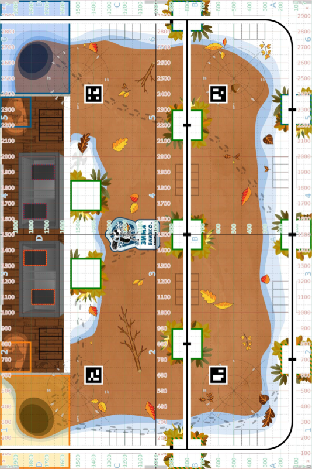
Рис. 9: Игровое поле, вид сверху.
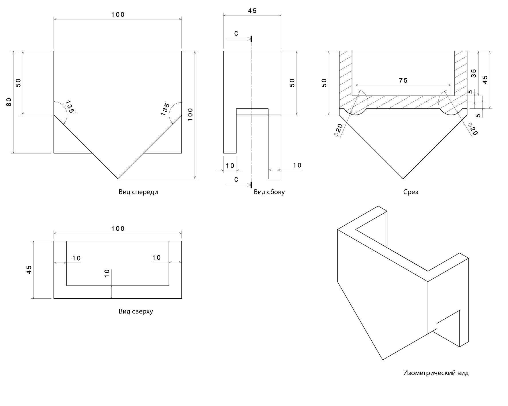
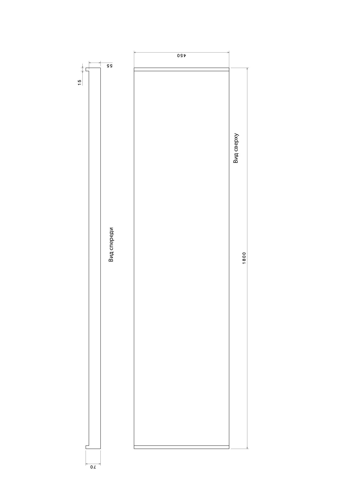
Элемент Материал Комментарий
Деревянные детали размером 150 мм x 50 мм x 30 мм, окрашенные в цвета команды на 2 больших Ящик с орехами противоположных сторонах, другая сторона остается чистой, с виниловой наклейкой, на которой нанесены бирки aruco 36 и 47. Их вес не определен и зависит от организации. Деревянные элементы размером 150 мм x 50 мм x 30 мм, Ящик с гнилыми орехами окрашенные в черный цвет, с виниловой наклейкой, на которой нанесены бирки aruco 41. Их вес не определен и зависит от организации. печати Указатель Деталь 3D-
Выступ Боковой выступ 15 мм
Поверхность игрового Печатный винил поля
Цвет RAL CMYK RGB
Команда синие RAL 5017 Mat 100%, 60%, 0%, 10% 0, 91, 140
Команда оранжевые RAL S 0580-Y50R Mat 0%, 57%, 100%, 0% 249, 127, 16
Ящик с гнилыми орехами RAL 9017 Mat 50%, 30%, 50%, 100% 42, 41, 42
Борта и неокрашенные RAL 7032 Mat 15%, 10%, 25%, 20% 181, 176, 161 части